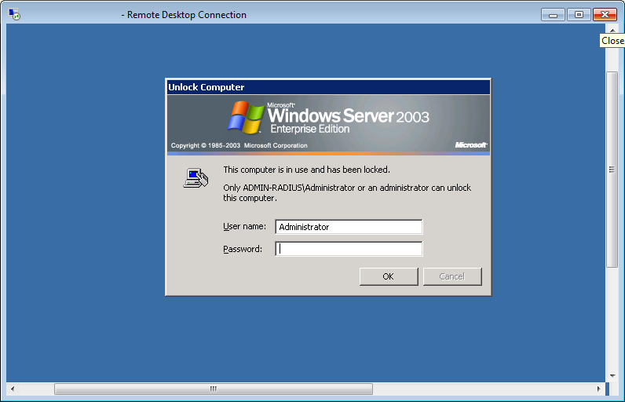

TeamViewer bị giới hạn 5 phút và bạn đang tìm kiếm một phần mềm thay thế TeamViewer ? Mình có lượn lờ qua internet và thấy một số bài báo có điểm tên một số phần mềm để thay thế như Chrome Remote Desktop, VNC , LogmeIn.... nhưng liệu nó có thể thay thế TeamViewer thực sự? Hãy cùng mình điểm tên các phần mềm đó xem tại sao nó lại không được sử dụng rộng rãi:
1. Logmein
LogMeIn là 1 dịch vụ cho phép điều khiển máy tính từ xa do Mỹ phát triển. Dịch vụ này có một số điểm yếu khiến rất nhiều người ở VN không mặn mà sử dụng nó. Thứ nhất do nó không mở rộng hệ thống máy chủ ra các nước ở Châu Á nên tốc độ điều khiển khá chậm, chậm hơn rất nhiều so với TeamViewer. Khi điều khiển 2 máy tính ở ngay cạnh nhau bạn sẽ thấy bàn phím và chuột của bạn bị delay một cách từ từ, hình ảnh hiển thị rật chậm rất nhiều, đôi khi không thể kết nối được nếu môi trường mạng không tốt. LogMeIn yêu cầu phải đăng kí tài khoản mới cho sử dụng. Giao diện lại là tiếng Anh.
Một vấn đề khác là nếu muốn sử dụng LogMein, bạn phải truy cập vào website Logmein rồi đăng ký tải khoản, kích hoạt email, sau đó đăng nhập vào tài khoản... rồi cuối cùng mới được download. Điều này thực sự quá phiền toái. Bạn không muốn mất công hướng dẫn khách hàng đăng ký tài khoản LogMein rồi mới được hỗ trợ vì khách hàng của bạn sẽ tỏ ra khó chịu và nản chí nếu thao tác quá lằng nhằng. Đồng nghĩa với việc bạn sẽ mất khách vì khách hàng của bạn sẽ tìm đến một doanh nghiệp khác hỗ trợ nhanh và dễ hiểu hơn bạn.
LogMeIn cũng không có giao diện tiếng Việt, nên nếu khách hàng của bạn không giỏi tiếng Anh là một trở ngại rất lớn.
2. Window Remote Desktop
Window Remote Desktop là công cụ được tích hợp sẵn của Windows. Cho phép bạn điều khiển máy tính hoặc máy chủ từ xa. 
Window Remote Desktop chỉ được thiết kế để điều khiển máy chủ hoặc máy tính của chính mình
Nhưng công cụ này không được thiết kế chuyên biệt để điều khiển máy tính hỗ trợ đối tác từ xa như bạn nghĩ. Với Window Remote Desktop, bạn chỉ có thể điều khiển được máy tính khi máy tính đó đã log off. Có nghĩa là nếu bạn muốn hỗ trợ một ai đó, bạn sẽ phải bảo họ log off máy rồi cho bạn địa chỉ IP của họ cùng với tài khoản đăng nhập vào Windows thì bạn mới điều khiển vào máy tính của họ được. Rõ ràng là bạn không thể sử dụng nó để hỗ trợ khách hàng được!
3. UltraVNC
UltraVNC cũng là phần mềm được thiết kế để điều khiển máy tính từ xa, nhưng nó chỉ chuyên dùng để điều khiển máy tính của chính bạn hơn là điều khiển để hỗ trợ khách hàng. Để sử dụng UltraVNC, bạn sẽ phải cài đặt, cấu hình nhiều bước, bạn sẽ cần cài đặt UltraVNC server lên máy của bạn, sau đó bạn phải cấu hình tường lửa, phải cấu hình NAT Port trên router. Rồi từ máy client mới cấu hình IP máy chủ để kết nối.
Như vậy, để hỗ trợ khách hàng với UltraVNC sẽ gần như là không thể, bạn sẽ phải biến khách hàng của bạn thành một nhân viên IT. Bạn không thể bỏ ra cả tiếng đồng hồ để bảo khách hàng của bạn tải UltraVNC về máy, cài đặt, cấu hình tường lửa, NAT port, rồi gửi bạn địa chỉ IP... ĐIều mà khách hàng của bạn sẽ không bao giờ muốn và không có thời gian để làm. Khách hàng của bạn sẽ đi tìm doanh nghiệp khác, nơi có thể hỗ trợ họ nhanh hơn như TeamViewer.
4. Chrome Remote Desktop
Giống như các phần mềm trên, Chrome Remote Desktop được thiết kế khá lằng nhằng và chỉ chuyên dùng để điều khiển máy tính trong cùng mạng nội bộ. Hãy cùng phân tích cách cài đặt Chrome Remote Desktop : Người được điều khiển phải có trình duyệt Chrome và cài Chrome Remote Desktop. Giao diện tiếng anh khó sử dụng và tốc độ không nhanh
- Để sử dụng Chrome Remote Desktop, bạn sẽ cần có trình duyệt Chrome ở cả máy điều khiển và máy được điều khiển. Nếu Chrome trên máy được điều khiển hoặc máy bạn mà bị lỗi thì đồng nghĩa 2 máy sẽ không điều khiển được nhau.
- Sau đó cả 2 máy cần cài đặt Plugin RemoteDesktop của Chrome (khoảng 3MB).
- Sau khi cài đặt xong plugin này và chạy plugin đó, bạn sẽ tiếp tục bị yêu cầu phải có một tài khoản Google và đăng nhập vào tài khoản Google.
- Sau khi đăng nhập vào tài khoản Google và bấm vào Get Started, bạn lại tiếp tục được tiếp tục yêu cầu phải tải ChromeRemoteDesktopHost.msi (khoảng 8MB) về máy và cài đặt.
- Sau khi cài đặt xong xuôi, máy được điều khiển sẽ được cấp mã số PIN và gửi cho máy cần điều khiển để được hỗ trợ. Nếu 2 máy đó ở 2 đường truyền mạng khác nhau, bạn sẽ phải cấu hình tường lửa và router không chặn giao thức UDP, và phải cho phép traffic đi qua port 5222 (XMPP). Đây chính là điểm yếu chí mạng khiến Chrome Remote Desktop không được sử dụng làm phần mềm thay thế TeamVIewer vì ở môi trường doanh nghiệp các tường lửa hoặc router sẽ chặn port 5222 khiến Chrome Remote Desktop không thể hoạt động nổi.
Ngoài ra Chrome remote Desktop cũng chỉ có giao diện tiếng Anh khiến việc bạn phải hỗ trợ khách hàng của mình cài đặt Chrome Remote Desktop thực sự mất thời gian.
Chrome Remote Desktop cũng không phát triển hệ thống máy chủ tại Việt Nam như TeamViewer nên đường truyền sẽ đi qua 1 proxy ở nước ngoài, tốc độ rất chậm và khó khăn trong quá trình thao tác, Chrome Remote Desktop cũng hạn chế các tính năng chia sẻ file, chat...
Và cuối cùng, khi các bạn không thể tìm được phần mềm nào khác đáng để thay thế TeamViewer. Thì đó là lúc các bạn sẽ cần đến phần mềm điều khiển máy tính từ xa UltraViewer. UltraViewer được thiết kế chuyên để hỗ trợ khách hàng, đối tác từ xa với giao diện đơn giản giống như TeamViewer, chỉ cần tải và chạy với chưa đầy 15s, là 2 máy đã có thể kết nối với nhau. Hãy tải ngay UltraViewer tại website http://ultraviewer.net/vi/ để sử dụng miễn phí cho công việc của bạn.
Chia sẻ bài viết
Về tác giả
DucFabulous
UltraViewer là sản phẩm của DucFabulous Co,ltd. Chúng tôi gồm đội ngũ những kĩ sư chăm chỉ, nhiệt huyết, với khao khát sáng tạo và làm chủ công nghệ, sẽ đem đến những điều đặc biệt giá trị nhất dành cho bạn.
Phần mềm rất tuyệt vời rồi. Nhưng có 1 nhược điểm là Không có chế đặt mật khẩu và không có chế độ khởi động cùng Windows để mỗi lần cài máy không phải cung cấp lại ID và mật khẩu. Cám ơn tác giả.
Hiện tại Ultraviewer chạy rất tốt, nhanh, giao diện thân thiện, nhưng chưa có chức năng Auto run when start. Chức năng này rất cần thiết với IT, quản lý nhiều PC.Nếu được Ultraviewer tích hợp thêm chức năng Auto run nữa là OK.Tạm thời cho ****** !
Gửi anh Huan, UltraViewer đã có tính năng tự động khởi động cùng Windows. Anh xem thông tin về tính năng đó tại đường link này nhé ạ : http://ultraviewer.net/vi/60023-thong-bao-phien-ban-nang-cap-ultraviewer-5-1.html . Em cám ơn anh!
@UltraViewer: Chào admin.
cho mình hỏi Ultra có kết nối được smart phone với máy tính được không a. ví có lúc mình không có p73 văn phòng. Cảm ơn rất nhiều.
Hiện tại mình vẫn phải sử dụng teamviwer mặc dù tính năng của ultraview thì tốt hơn hẳn, vì TV có thể tạo acc để add các đối tác hay khách hàng để không cần phải hỏi họ khi muốn quản lý thiết bị.. UV mà có thêm chức năng này thì thật tuyệt vời :x
Phần mềm điều khiển khá tốt, tuy nhiên chưa có tính năng send Ctrl+Alt+Del, chưa có danh sách các máy tính mình có quyền điều khiển, nên mỗi lần muốn remote thì phải nhập ID
Ultraview nên thêm chức năng khi kết nối thì máy bị kết nối desktop đen để mang tính bảo mật người điều khiển , tránh người ngồi máy đang bị điều khiển xem thông tin
Tôi có mua Ultral Enterprise để sử dụng vì nghĩ phần mềm trong nước sẽ không bị ảnh hưởng khi cable quang biển gặp sự cố. Nhưng một điều bất tiện là Ultralview rất hay mất kết nối, gây ra tâm trạng bức xúc khi đang xử lý sự cố cần tiến độ nhanh. Mong phía nhà cung cấp khắc phục tình trạng này để người dùng tin tưởng tốt hơn.
Phần mềm điều khiển máy tính từ xa UltraViewer đã đạt cột mốc mới về lượng người sử dụng trên toàn cầu. Chúng tôi đang nỗ lực cải tiến sản phẩm không ngừng để đáp ứng nhu cầu của người sử dụng, xin đừng ngần ngại gửi ý kiến góp ý tới chúng tôi.


Phần mềm rất tuyệt vời rồi. Nhưng có 1 nhược điểm là Không có chế đặt mật khẩu và không có chế độ khởi động cùng Windows để mỗi lần cài máy không phải cung cấp lại ID và mật khẩu. Cám ơn tác giả.
Reply